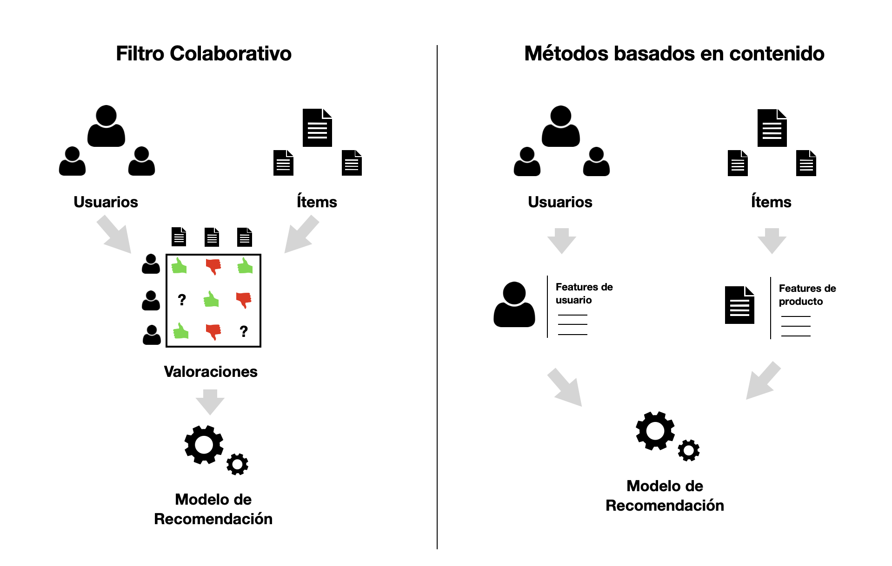
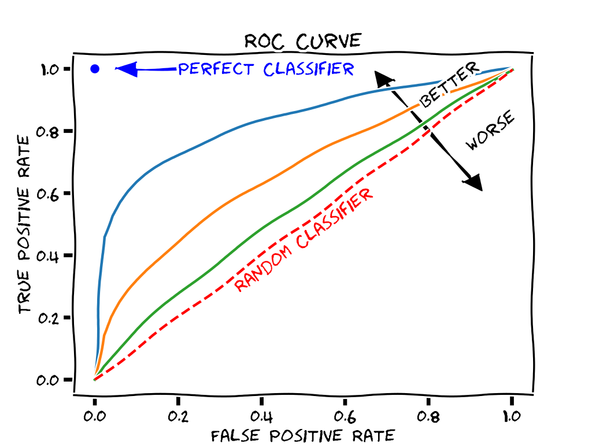

Paula López Casado - 21-12-2022
Los sistemas de recomendación son algoritmos que permiten sugerir ítems a usuarios de forma personalizada, basándose en datos históricos o features de los usuarios e ítems.
En los últimos años, están presentes en la mayor parte de plataformas de entretenimiento así como comercios online y otros servicios web.
Amazon utiliza sistemas recomendación para vender artículos que puedan interesar a los comparadores
Google con Youtube, recomienda vídeos en función de las visualizaciones de los usuarios
Spotify para la recomendación y exploración de canciones y lista de reproducción que puedan interesar a los oyentes
En 2006, Netflix organizó un concurso abierto para el mejor algoritmo de filtrado colaborativo para predecir las valoraciones de los usuarios de las películas, basándose en las valoraciones anteriores sin ninguna otra información sobre los usuarios o las películas.
Hoy en día cuenta con 220 millones de usuarios
En los sistemas de recomendación se utiliza una nomenclatura común:
Usuario: Individuo que provee valoraciones sobre ítems y al que posteriormente se le recomienda
Ítem, producto: Objecto a recomendar al usuario
Rating: Valoración o preferencia del ítem a recomendar. Por ejemplo, calificación de 1 a 5 de menor a mayor preferencia.
Catálogo de productos: Listado de productos o ítems disponibles a recomendar.
 {fig-align=“center”;}
Se basa en interacciones pasadas entre usuarios e ítems para producir nuevas recomendaciones
Las iteracciones se almacenan en las matrices de interacción usuario-ítem
Supone que interacciones pasadas son suficientes para detectar usuarios o ítems similares
No es posible recomendar sin interacciones previas entre usario-ítem
Soluciones comunes:
Basados en memoria
Basados en modelo
Sea \(U = \{u_1, u_2, ..., u_m\}\) un conjunto de usuarios
\(I = \{i_1, i_2, ..., i_n\}\) un conjunto de ítems
los ratings se almacenan en una matriz de usuario-ítem \(m \times n\), \(R(r_{jl})\)
Cada fila de \(R(r_{jl})\) representa un usuario \(u_j\) con \(1 \leq j \leq m\)
Cada columna representa el ítem \(i_l\) con \(1 \leq l \leq n\)
Utilizamos \(r_j\) para denotar el vector de filas de \(R\) con los ratings de los usuarios \(u_j\)
Los ratings, tendrían una escala específica. Por ejemplo, Amazon utilza una escala de 1 a 5 para valorar los productos de su plataforma y cada rating estimado puede tomar valor dentro del intervalo \([1, 5]\)
Generalmente, solo una pequeña fracción de ratings es conocida, y para la mayor parte de los elementos de la matriz \(R\) serán valores missing o desconocidos
Dichos valores representan productos que el usuario no a valorado todavía y que, probablemente, no haya visto hasta el momento
El objetivo es crear recomendaciones para un usuario llamado usuario activo \(u_a \in U\)
Definimos el conjunto de elementos desconocidos para el usuario \(u_a\) como \(I_a=I \setminus \{i_l \in I | r_{al} > 0\}\)
Las dos tareas típicas son:
Los sistemas de recomendación están relacionados con el problema de completar la matriz
La creación de una lista top-N puede considerarse como un segundo paso después de predecir las valoraciones de todos los artículos desconocidos en \(I_a\) y, a continuación, tomar los \(N\) artículos con las valoraciones más altas predichas
Algunos algoritmos omiten la predicción de las valoraciones en primer lugar y son capaces de encontrar directamente los \(N\) mejores artículos
Una lista de las \(N\) mejores recomendaciones para un usuario \(u_a\) es un conjunto parcialmente ordenado \(T_N = (X,\geq)\), donde \(X \subset I_a\) y \(|X| \leq N\) (\(|.|\) denota la cardinalidad del conjunto)
Nótese que pueden existir casos en los que las listas top-N contengan menos de N elementos. Esto puede ocurrir si \(|I_a| < N\) o si el algoritmo es incapaz de identificar \(N\) elementos a recomendar
En las matrices de interacción existe un gran número de elementos con valoraciones desconocidas
Esto hace que predecir los valores de las valoraciones desconocidas sea computacionalmente costoso
Algunos enfoques, por ejemplo los enfoques basados en reglas, pueden predecir la lista top-N directamente sin considerar primero todos los elementos desconocidos
Algoritmo basado en memoria que asume que usuarios con preferencias similares valorarán elementos de forma similar
Consiste en encontrar el vecino más cercano entre los usuarios con valoraciones ya conocidas y agregar dichas valoraciones para generar una predicción
El conjunto de vecinos más cercanos se define en términos de similitud entre usuarios
\[m_{pearson}(x,y) = \frac{1}{n-1} \sum_{l=1}^{n} (\frac{x_l - \bar{x}}{s_x})(\frac{y_l - \bar{y}}{s_y})\]
\[m_{coseno}(x,y) = \frac{x . y}{||x|| ||y||}\]
Una vez encontrados los usuarios en el conjunto de vecinos, sus valoraciones se agregan para formar la valoración prevista para el usuario activo \(u_a\)
La forma más sencilla es hacer una media de las valoraciones en el conjunto de vecinos
Para el elemento \(i_l\) esto es
\[\hat{r}_{al} = \frac{1}{|N(a)|} \sum_{i \in N(a)}{r_{il}}\]
Algunos usuarios tienden a valorar positivamente cualquier elemento frente a otros que utilizan valoraciones más bajas, por tanto se debe normalizar los datos
El método más popular de normalización consiste en centrar las filas de la matriz de valoración usuario-ítem mediante \(h(r_{jl}) = r_{jl} - \bar{r}_{j}\), donde \(\bar{r}_{j}\) es la media de todas las valoraciones disponibles en la fila \(j\) de la matriz \(R\).
Para obtener la valoración en la escala original basta con aplicar la inversa de la función de normalización
Las recomendaciones se basan en la relación entre ítems inferidos de la matriz de valoraciones
Supone que los usuarios preferirán los artículos que sean similares a otros artículos que les gusten
Las medidas de simitud son de nuevo la correlación de Pearson y la similitud del coseno
Pero ahora, los vectores de valoración \(x\) e \(y\) son columnas de \(R\) que representan las valoraciones de dos artículos
Las similitudes entre pares se almacenan en una matriz de similitud \(S\) de \(n × n\)
Para reducir el tamaño del modelo a \(n × k\) con \(k ≪ n\), para cada elemento sólo se almacena una lista de los \(k\) elementos más similares y sus valores de similitud
Los \(k\) ítems más similares al ítem \(i_l\) se denotan por el conjunto \(S(l)\) que puede verse como el conjunto de vecinos de tamaño \(k\) del ítem
\[\hat{r}_{al} = \frac{1}{\sum{i \in S(l)}s_{li}} \sum_{i \in S(l)}{s_{li} r_{ai}}\]
El IBCF es más eficiente que UBCF, ya que la matriz de similitud reducida es relativamente pequeña \((N × k)\) y puede ser precalculado en su totalidad
IBCF sólo produce resultados ligeramente inferiores en comparación con UBCF
IBCF se aplica con éxito en sistemas de recomendación a gran escala, como por ejemplo en Amazon
Los algoritmos de recomendación se evalúan dividiendo \(R\) en dos conjuntos de usuarios \(U_{train} \cup U_{test} = U\)
\(U_{train}\) se utiliza para generar el modelo de recomendación
A continuación, cada usuario \(u_a \in U_{test}\) se considera un usuario activo
Antes de crear las recomendaciones, se retienen algunos elementos del perfil \(r_{u_a}\) y se mide lo bien que coincide la valoración predicha con el valor retenido
Por último, se promedian las medidas de evaluación calculadas para todos los usuarios de \(U_{test}\)
División (Splitting): Asignación aleatoria.
Muestreo Bootstrap: Muestreo con reemplazo. Ideal para conjuntos de datos pequeños.
Validación cruzada k-fold:
Root mean square error (RMSE): Es la desviación típica de la diferencia entre las valoraciones reales y las previstas.
Mean squared error (MSE): Es la media de la diferencia al cuadrado entre las valoraciones real y prevista. Es el cuadrado del RMSE, por lo que contiene la misma información.
Mean absolute error (MAE): Es la media de la diferencia absoluta entre las valoraciones real y prevista.
La curva ROC es la representación gráfica de la sensibilidad frente a 1-especificidad
El área bajo la curva ROC se denomina AUC
El valor ideal del AUC es 1, es decir, cuando la curva ROC pasa por el vértice superior izquierdo

Algoritmo Slope One, un enfoque simple y popular basado en ítems (Lemire y Maclachlan 2005)
Enfoque de factores latentes mediante la descomposición matricial (Koren et al. 2009)
Modelos basados en Deep Learning (Zhang, Yao, Sun y Tay 2019).
Base de usuarios es cambiante
El catálogo es dinámico
Feedback escaso
Sensibilidad Temporal no recogida:
A diferencia de los anteriores, utilizan información adicional de los usuarios y/ o de los ítems
En un sistema de películas por ejemplo, esto pueden ser la edad, el sexo del usuario y la categoría, actores, o duración de la película
Modelo basado en features disponibles que explica las interacciones observadas entre usuario-ítem
Para recomendar un nueva película solo tendremos que mirar el perfil del usuario y recomendar en función de la información que vemos
Son una forma de aprendizaje de refuerzo o Reinforcement Learning clásico
Intentan equilibrar la exploración de nuevas acciones y la explotación de la mejor acción actual para maximizar la recompensa
El objetivo es aprender y elegir acciones que maximicen la recompensa total
Contextual Bandits. Recogen y observan el contexto antes de cada acción, y eligen acciones basadas en el contexto. Aprenden cómo las acciones y el contexto afectan a la recompensa
Netflix utiliza el algoritmo Contextual Bandits para personalizar las imágenes de las películas en la página de inicio
Acción: El bandit puede elegir entre un conjunto de imágenes para cada ítem
Recompensa: Número de minutos que el usuario reproduce la serie o película dada una caráctula concreta
Contexto: Información del usuario (por ejemplo, títulos reproducidos, géneros reproducidos, país, preferencias de idioma), día de la semana, hora del día, etc.
https://elartedeldato.com